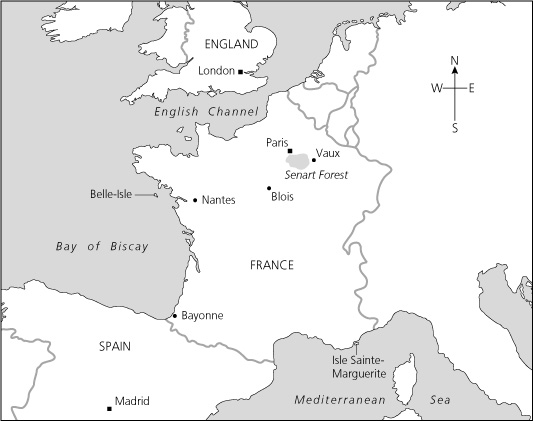

Ghi chú về Tác giả
Ghi chú về Câu chuyện này
1 Cung điện Bastille, Paris
2 Người tù
3 Cung điện Louvre, Paris
4 ‘Con sẽ Trở thành một Vị Vua Vĩ đại’
5 Ngôi nhà Vaux tuyệt vời
6 ‘Ta là Vua nước Pháp!’
7 Louis và Philippe
8 Fouquet biết được Bí mật
9 Âm mưu của Giám mục
10 Những người anh em
11 Những cuộc gặp ở Nantes
12 Đảo Belle-Isle
13 Trốn thoát
14 Kiếm sĩ ngự lâm sau cùng
